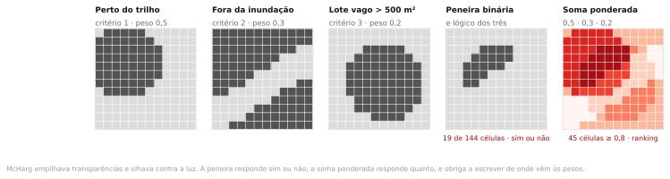
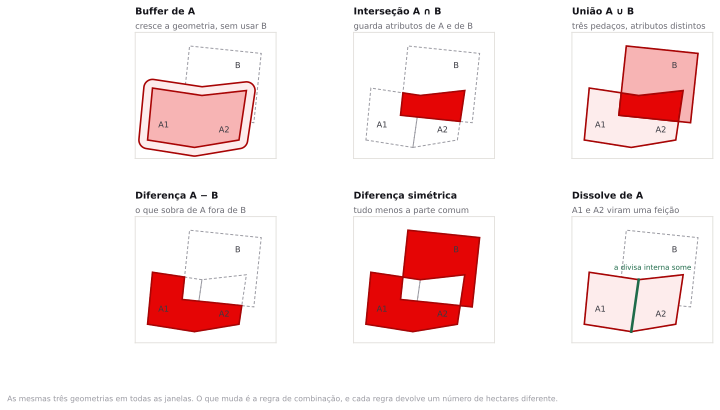
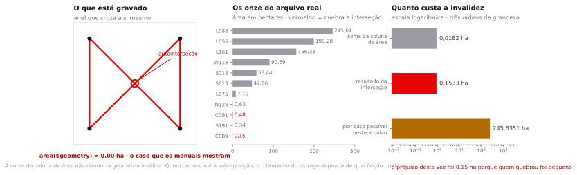
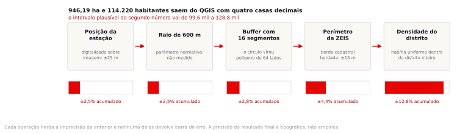
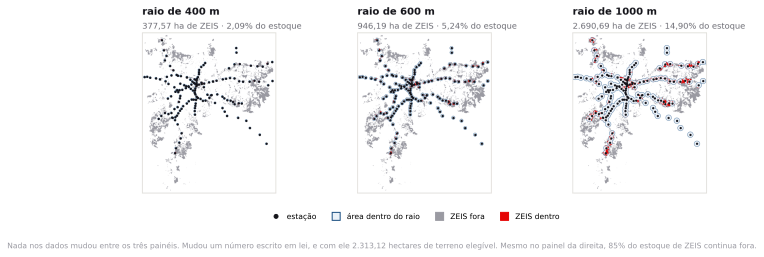

Preparação e dados
Você deveria chegar tendo lido os dois artigos do Plano Diretor de São Paulo que tratam de ZEIS e dos eixos de estruturação. São três páginas. Se não leu, leia agora, enquanto a turma abre o QGIS.
- setores_sp_capital_2022.gpkg 27.301 setores censitários do município de São Paulo, polígono, EPSG:4674. Malha oficial do Censo 2022 com distrito, subdistrito, bairro, área e as variáveis v0001 a v0007. Serve de base para os recortes por distrito e para a análise de densidade.oficial
- estacoes_alta_capacidade_sp.gpkg 203 estações em operação, 94 de metrô e 109 de trem metropolitano, ponto, EPSG:31983. Camadasoficial
estacao_metroeestacao_tremdo GeoSampa, com o campomodoacrescentado na junção. - zeis_sp.gpkg 2.571 perímetros de ZEIS do Plano Diretor, Mapas 4 e 4A, EPSG:31983. Onze deles têm geometria inválida pelo GEOS — no dado oficial mesmo, e é isso que o passo 3 usa.oficial
- distritos_sp.gpkg 96 distritos do município de São Paulo, polígono, EPSG:31983, com sigla, região e área.oficial
- eixos_estruturacao_sp.gpkg 4.818 polígonos dos Eixos de Estruturação da Transformação Urbana, Mapa 3 do Plano Diretor, EPSG:31983.oficial
- zoneamento_sp_2024.gpkg 10.240 perímetros de zona da Lei 18.177/2024, Mapa 1, EPSG:31983. É o mapa de perímetros da revisão, não o zoneamento consolidado da cidade inteira.oficial
O município quer saber quantos hectares de ZEIS estão perto o suficiente do transporte de alta capacidade para receber habitação social adensada. Você abre o QGIS e a primeira pergunta que precisa responder não é técnica: perto o suficiente é quanto?
Sobreposição, proximidade e análise de adequação
Em 1969, um paisagista escocês radicado na Filadélfia publicou um livro que ensinou o mundo a empilhar mapas. Ian McHarg desenhava cada critério em uma folha de acetato, com as áreas piores em cinza escuro e as melhores em transparente. Depois empilhava as folhas sobre uma mesa de luz e olhava. Onde a luz atravessava, o traçado da estrada podia passar.
O livro é o Design with Nature, e o método ficou conhecido como sobreposição de camadas. Quando os primeiros sistemas de informação geográfica apareceram, a mesa de luz virou álgebra: o acetato virou camada, e o julgamento visual do projetista, uma operação booleana sobre valores numéricos. A ideia sobreviveu inteira nos SIG atuais, incluindo o menu de geoprocessamento que você vai usar hoje.
Duas famílias de resposta saíram daí. A primeira é a peneira: cada critério vira uma condição de sim ou não, as condições são combinadas com um e lógico, e sobra o território que atende a todas. A segunda é a combinação ponderada: cada critério recebe uma nota e um peso, as notas se somam, e o resultado é um ranking de aptidão em vez de uma lista de aprovados.

Análise de adequação
Procedimento que combina várias camadas de critério para identificar onde um uso pretendido pode ou deve ocorrer. O produto é um mapa de aptidão. A parte técnica é a combinação; a parte que decide o resultado é a lista de critérios e os pesos, e nenhuma das duas está nos dados.
Se você trocar a ordem das camadas na peneira binária, o resultado muda?
Não. O e lógico é comutativo, e a peneira devolve o mesmo território em qualquer ordem. Mas isso vale para a operação, não para o processo. Se você define os pesos depois de olhar o primeiro mapa de aptidão, e ajusta até o resultado bater com o que a prefeitura espera, a conta continua correta e a análise deixa de valer. Nesse caso a ordem importa muito, só que a ordem em questão é a das decisões, não a das camadas.
Clip, interseção, diferença, união e dissolve
Tudo o que se faz em análise vetorial se reduz a poucas operações de geometria. O QGIS as reúne em Vector ▸ Geoprocessing Tools, e vale conhecer as diferenças, porque duas delas parecem a mesma coisa e devolvem tabelas de atributos incompatíveis.

| Operação | Algoritmo | O que sai na tabela de atributos |
|---|---|---|
| Buffer | native:buffer | Uma feição por entrada, com os mesmos atributos. Se marcar Dissolve result, sai uma feição só, sem atributos úteis. |
| Interseção | native:intersection | Uma feição por par que se cruza, com os campos das duas camadas lado a lado. |
| Recorte | native:clip | Geometria igual à da interseção, mas só com os campos da camada de entrada. A camada de recorte é um molde, não uma fonte de dados. |
| Diferença | native:difference | O que sobra da entrada fora da sobreposição, com os campos da entrada. |
| Diferença simétrica | native:symmetricaldifference | As duas exclusividades. Metade das feições tem os campos de uma camada preenchidos e os da outra nulos. |
| Dissolve | native:dissolve | Sem campo escolhido, uma feição multiparte só. Com campo escolhido, uma feição por valor distinto, mantendo o primeiro registro de cada grupo. |
Interseção e recorte dão a mesma geometria e por isso muita gente usa qualquer uma das duas. A diferença aparece depois, quando você precisa do atributo que ficou na camada de recorte e ele não está lá. Se você vai precisar de campos das duas camadas, use interseção.
Buffer
Um buffer é a região do plano a menos de uma distância dada de uma feição. É a maneira mais direta de transformar a ideia de proximidade em um polígono que se pode medir. E carrega duas simplificações que ninguém declara.
A primeira é geométrica. O QGIS não desenha um círculo, porque um círculo não é um polígono. Ele desenha um polígono regular que aproxima o círculo, e o número de lados vem do parâmetro Segments, que por padrão vale 5. Cinco segmentos por quadrante dão vinte lados no total. Um icoságono de 600 metros de raio tem 111,2461 hectares; o círculo verdadeiro tem 113,0973. A diferença é de 1,64% para menos, em cada uma das 203 estações.
área do círculo = π · r² = 113,0973 ha área do 20-gono = 10 · r² · sen 18° = 111,2461 ha -- Segments = 5, o padrão do QGIS área do 64-gono = 32 · r² · sen 5,625° = 112,9157 ha -- Segments = 16, o que o roteiro usa
Na cadeia inteira desta aula, a diferença entre os dois valores de Segments vale 15,06 hectares de ZEIS, sobre um resultado de 946 hectares. É pouco para mudar a conclusão, mas vem de um parâmetro que quase nunca aparece em relatório. O roteiro fixa Segments = 16 e pede que você registre isso junto com o raio.
A segunda simplificação é conceitual, e é maior. O buffer mede distância em linha reta sobre o plano, e ninguém se desloca assim numa cidade. Entre uma estação e um terreno a 600 metros de distância euclidiana pode haver uma linha férrea sem passagem, um córrego canalizado, um muro de condomínio ou uma avenida de seis faixas. A distância a pé pode ser o dobro. Isso volta no tema 10, quando você vai calcular área de serviço sobre a rede viária e comparar com o círculo desta aula.
Se o buffer superestima o alcance real da estação, por que a legislação urbanística usa buffer?
Porque a lei precisa de um perímetro que possa ser desenhado, publicado e conferido por qualquer parte interessada. Uma área de serviço calculada sobre rede depende do grafo viário usado, da velocidade adotada e da data do levantamento, e muda quando a rede muda. Um círculo depende de um ponto e de um número. A legislação troca precisão por auditabilidade, e essa troca é defensável desde que esteja declarada.
Junção espacial e agregação por polígono
No tema 3 você juntou tabelas por um campo em comum. A junção espacial faz o mesmo sem campo em comum: o que liga os dois registros é a posição. Cada feição da camada de entrada recebe os atributos das feições da outra camada que satisfazem um predicado geométrico.
Predicado espacial
Relação topológica entre duas geometrias, avaliada como verdadeira ou falsa. O QGIS oferece intersect, contain, equal, touch, overlap, are within e cross. Dois deles são traiçoeiros: intersect é verdadeiro mesmo quando as feições só encostam pela borda, e touch é falso quando uma está dentro da outra.
Depois do predicado vem a segunda decisão, que é o método. Take attributes of the first matching feature only devolve uma linha por feição de entrada e ignora as demais correspondências. Create separate feature for each matching feature devolve uma linha por par. O primeiro método é rápido e mente quando há mais de uma correspondência, porque a escolha do primeiro depende da ordem de leitura do arquivo.
Agregar por polígono é o passo seguinte: somar, contar ou tirar a média dos valores de todas as feições que caem dentro de cada unidade. É como se produz a tabela final de quase toda análise territorial, e é onde entram os dois problemas da aula 4.
Você tem a densidade média do distrito, em habitantes por hectare, e quer estimar quanta gente mora dentro de um perímetro de ZEIS. Multiplicar a área da ZEIS pela densidade do distrito resolve?
Resolve no sentido de produzir um número. O número supõe que a população se distribui uniformemente dentro do distrito, o que é falso por construção: uma ZEIS 1 é justamente a porção do distrito onde a densidade é várias vezes a média, e uma ZEIS 3 costuma ser a porção vazia. A estimativa erra nos dois sentidos, e erra mais quanto maior for o distrito. É a falácia ecológica da aula 4 aparecendo dentro de uma operação de rotina.
Geometria inválida
A norma Simple Features, do Open Geospatial Consortium, define o que é um polígono legítimo: o anel externo fecha, não cruza a si mesmo, os buracos ficam dentro do anel externo e não se sobrepõem. Arquivos de portal público violam essas regras o tempo todo, porque foram digitalizados à mão, convertidos entre formatos ou generalizados por um algoritmo que não checou o resultado.
O caso de manual é o laço de gravata: o anel cruza a si mesmo e forma dois lóbulos com orientação oposta. O cálculo de área soma as duas contribuições com sinais contrários e devolve menos do que a soma dos lóbulos; quando eles têm o mesmo tamanho, devolve zero. Esse é o caso que aparece em exemplo de aula, e não é o que você vai encontrar no GeoSampa.
No arquivo de ZEIS deste tema, 11 dos 2.571 perímetros são inválidos pelo GEOS. Todos são ZEIS 1. Sete acusam Self-intersection, dois, Ring self-intersection, e dois, Too few points in geometry component, o aviso de anel degenerado. Some a coluna de área antes e depois de Fix Geometries e o total sai de 18.058,7046 para 18.058,7228 hectares: dezoito milésimos de hectare de diferença, concentrados em um único perímetro, o C091 do Sé, que passa de 0,4776 para 0,4958 ha. Se o seu critério para se preocupar com validade fosse a soma da coluna, você fecharia o arquivo tranquilo.

Confiar na coluna de área para detectar geometria inválida. Ela não denuncia nada. O que denuncia é a operação de sobreposição: dos onze perímetros defeituosos, dois fazem o GEOS levantar exceção durante a interseção, e o QGIS descarta a feição com um aviso no painel de log que ninguém lê. Neste arquivo o prejuízo é pequeno porque os dois que quebram são pequenos. Poderia ter sido o L086, de 245,64 hectares. Rodar Vector ▸ Geometry Tools ▸ Check Validity antes de qualquer sobreposição custa dez segundos e é a única forma de saber em qual dos dois casos você está.
O que a cadeia de operações faz com a precisão
A análise desta aula tem cinco etapas: posição da estação, raio, buffer, interseção com a ZEIS, densidade do distrito. Cada uma introduz uma incerteza, e nenhuma delas devolve barra de erro. O QGIS entrega o resultado final com duas casas decimais, e a autoridade dessas duas casas é tipográfica.

A regra prática é simples e quase nunca seguida. Reporte o resultado com a precisão que a pior etapa da cadeia sustenta. Se a densidade entra com incerteza de 12%, escrever 114.220 habitantes é fingir uma exatidão de seis algarismos que a conta não tem. Escreva 114 mil, e diga por quê.
A cadeia também põe os defeitos em escala. A geometria inválida do passo 3 custa 0,15 hectare do resultado; o parâmetro Segments, 15; a troca do raio de 600 para 1000 metros, 1.744. O único desses erros que aparece em um aviso do software é o menor dos três.
O raio que vem da lei, e não dos dados
O Plano Diretor Estratégico de São Paulo, a Lei municipal 16.050 de 2014, organiza o adensamento da cidade em torno dos Eixos de Estruturação da Transformação Urbana. A lógica é explícita: onde há transporte coletivo de alta capacidade, permite-se construir mais, exige-se menos vaga de garagem e admite-se habitação de interesse social com parâmetros próprios. Onde não há, não.
Para que isso vire regra aplicável, a lei precisa dizer onde o eixo começa e onde termina. E aí aparece a distância: uma faixa a partir do eixo do corredor e um raio a partir do centro da estação. Os números constam do texto legal e dos mapas anexos, foram redesenhados na revisão intermediária de 2023 e são objeto de disputa em audiência pública desde a primeira minuta.
Nenhum desses números foi medido. Não existe experimento que mostre que a 600 metros a pessoa usa o metrô e a 620 não. Existe uma literatura de planejamento que trabalha com a faixa de 400 a 800 metros como distância caminhável, existem estudos de embarque por faixa de distância, e existe uma negociação política sobre quanto território o mercado imobiliário pode adensar. O valor final do raio sai dessa negociação, e cada metro a mais ou a menos redistribui potencial construtivo entre proprietários.

| Raio | ZEIS dentro (ha) | Do estoque | População estimada | Leitura |
|---|---|---|---|---|
| 400 m | 377,57 | 2,09% | 45.401 | Distância caminhável estrita, cinco minutos |
| 600 m | 946,19 | 5,24% | 114.220 | Faixa usada no desenho dos eixos |
| 1000 m | 2.690,69 | 14,90% | 320.931 | Doze a quinze minutos a pé, no plano |
Repare na terceira coluna antes de qualquer indignação. Mesmo com mil metros de raio, 85% do estoque de ZEIS da cidade continua fora do alcance do transporte de alta capacidade. O parâmetro decide quanto do estoque entra na política, e nenhum valor plausível dele faz o estoque caber perto do trilho.
Quem deveria ter a palavra final sobre esse número: o urbanista, o legislador ou o analista que roda o buffer?
O analista é o único dos três que não deveria decidir, e é justamente quem decide na prática, porque o valor entra na caixa de diálogo e ninguém pergunta de onde veio. A resposta profissional é registrar o parâmetro como premissa declarada, apresentar o resultado para mais de um valor, e deixar a escolha visível para quem tem mandato para fazê-la. As duas formações da turma se encontram neste ponto: o aluno de Direito descobre que um artigo de lei define um desenho no mapa, e o de Engenharia descobre que o desenho que ele calcula distribui valor imobiliário entre proprietários.
Dada uma pergunta territorial, a prova pode pedir que você monte a cadeia de operações de sobreposição que a responde, na ordem correta, e que identifique qual parâmetro do procedimento é normativo e não técnico, dizendo quem tem competência para fixá-lo.
Quanta ZEIS cabe dentro do raio
Todos os números abaixo saem dos arquivos do pacote. Se o seu QGIS mostrar outro valor, algum passo saiu diferente, e vale voltar antes de seguir.
Baixar as camadas direto do GeoSampa
Os arquivos do pacote já vêm prontos. Este passo é para você saber de onde eles saíram e conseguir refazer o download sozinho, com a camada atualizada, sem depender do pacote.
O GeoSampa publica os dados por dois serviços diferentes, e o endereço de ambos começa com wms.geosampa..., o que confunde. Eles não fazem a mesma coisa.
WMS, de Web Map Service, devolve imagem. Você pede uma área e uma escala, e o servidor desenha o mapa lá, com a simbologia que o órgão escolheu, e manda de volta um PNG. É rápido e leve, e serve para usar o dado como fundo. O que chega é figura: não tem tabela de atributos, não dá para filtrar, medir área, cruzar com outra camada nem calcular campo. Zoom demais e a imagem pixeliza, porque não existe geometria por trás, só pixel.
WFS, de Web Feature Service, devolve feição. Você pede uma camada e o servidor manda a geometria de cada polígono ou ponto, com os atributos, no formato que você escolher. O que chega é dado de verdade: o QGIS desenha do jeito que você mandar, e todas as operações desta aula funcionam. Em compensação é mais pesado, porque vem tudo.
A regra prática: WMS para olhar, WFS para analisar. O mapa base OpenStreetMap que você usa desde o tema 1 é o mesmo raciocínio do WMS, e é por isso que você nunca abriu a tabela de atributos dele. Nesta aula você precisa medir e cruzar, então tudo vem por WFS.
Os dois são padrões abertos do Open Geospatial Consortium, não invenção da prefeitura. Qualquer órgão que publique WFS responde ao mesmo tipo de endereço, o que quer dizer que o que você aprende aqui serve para o IBGE, o INPE, a ANA e os portais de outras capitais.
Caminho A · pelo WFS, clicando nos links
Cada link abaixo pede uma camada ao servidor e devolve um arquivo GeoJSON, que o QGIS abre direto, sem descompactar nada. Clique, salve em InfoGeo/tema05_sobreposicao/dados_brutos/ e arraste o arquivo para dentro do QGIS.
| Camada | Feições | Download |
|---|---|---|
| ZEIS 1, Mapa 4 do Plano Diretor | 1.401 | baixar · 2,3 MB |
| ZEIS 2, 3, 4 e 5, Mapa 4A | 1.170 | baixar · 1,1 MB |
| Estações de metrô em operação | 94 | baixar · 44 kB |
| Estações de trem metropolitano, CPTM | 109 | baixar · 51 kB |
| Distritos do município | 96 | baixar · 4,7 MB |
| Eixos de Estruturação da Transformação Urbana, Mapa 3 | 4.818 | baixar · 4,0 MB |
| Perímetros de zona, Lei 18.177/2024, Mapa 1 | 10.240 | baixar · 21 MB |
Repare no que o link é por dentro. Ele não é um endereço de arquivo guardado numa pasta do servidor: é uma pergunta, e cada pedaço depois do ? é um parâmetro dela.
https://wms.geosampa.prefeitura.sp.gov.br/geoserver/geoportal/wfs -- endereco do servico ?service=WFS -- qual servico, WFS e nao WMS &version=2.0.0 -- versao do padrao &request=GetFeature -- o que quero: as feicoes &typeNames=geoportal:estacao_metro -- qual camada &outputFormat=application/json -- em que formato devolver
Trocar o typeNames troca a camada, e é assim que você baixa qualquer outra coisa do GeoSampa. Para descobrir o nome de uma camada que não está na tabela acima, peça o catálogo ao servidor com ?service=WFS&version=2.0.0&request=GetCapabilities: ele devolve a lista inteira, em XML, com o nome e a descrição de cada uma.
O mesmo serviço aceita outputFormat=SHAPE-ZIP e devolve um Shapefile compactado. Evite, e o motivo é concreto: o Shapefile que esse servidor devolve chega com o texto em ISO-8859-1, que o QGIS lê como UTF-8 e transforma Mauá em MAU?; chega sem o código EPSG, mesmo trazendo o sistema certo, então o QGIS marca a camada como CRS personalizado e o código não aparece na barra de status; e trunca todo nome de coluna em dez caracteres, de modo que nm_estacao_metro_trem vira nm_estacao. O GeoJSON não tem nenhum dos três problemas: é UTF-8 por definição do formato, declara EPSG:31983 e mantém o nome inteiro das colunas.
Se ainda assim você precisar usar um Shapefile de outra origem, os dois primeiros problemas têm conserto no QGIS: a codificação em Properties ▸ Source ▸ Data source encoding, e o sistema de coordenadas em botão direito na camada ▸ Set CRS of Layer(s), com Ctrl+Shift+C. O nome truncado não tem conserto: a informação se perdeu na gravação.
Depois de baixar, você ainda precisa juntar o que a aula usa como uma camada só:
- Junte as duas camadas de ZEIS com Vector ▸ Data Management Tools ▸ Merge Vector Layers, com Destination CRS em
EPSG:31983. - Junte metrô e trem do mesmo jeito. Antes, crie em cada uma um campo
modode texto, com a expressão'metro'numa e'trem'na outra, senão depois da junção não dá para saber qual estação é de quê. - Exporte cada resultado com botão direito na camada ▸ Export ▸ Save Features As, formato GeoPackage, Encoding em
UTF-8, CRSEPSG:31983, dentro dedados_tratados/.
Caminho B · pela interface do mapa, quando o WFS não responder
- Abra geosampa.prefeitura.sp.gov.br e entre em Mapa Digital da Cidade de São Paulo.
- Na barra de ferramentas da esquerda, clique no ícone de disquete, Download de Camadas. Abre uma janela nova; se o navegador bloquear pop-up, libere para este site.
- Na janela, escolha a Categoria e depois a Camada:
- Categoria Legislação Urbana, camada ZEIS 1 (4) e camada ZEIS 2-3-4-5 (4A)
- Categoria Transporte, camada Metrô - Estação e camada Trem Metropolitano - Estação
- Categoria Limites Administrativos, camada Distrito Municipal
- Categoria Legislação Urbana, camada Eixos de Estruturação da Transformação Urbana (3) e camada Perímetro de Zonas (Lei 18.177/24)
- Em Formato, escolha Shapefile. Em Sistema de coordenadas, deixe SIRGAS 2000 / UTM 23S, que é o EPSG:31983.
- Clique Baixar e salve em
InfoGeo/tema05_sobreposicao/dados_brutos/, com o nome que o portal sugerir. - Esse Shapefile também vem em Latin-1. Antes de exportar, abra Properties, aba Source, e troque Data source encoding para
ISO-8859-1. Só então exporte para GeoPackage em UTF-8.
Abra a tabela de atributos e procure um nome com acento: Mauá na camada de trem, Paraisópolis ou Anhangabaú nas de zoneamento. Se aparecer MAU? ou Paraisop?lis, a codificação está errada. Corrija antes de exportar: depois de gravado em GeoPackage, o caractere quebrado é definitivo.
Os setores censitários não vêm do GeoSampa
O arquivo setores_sp_capital_2022.gpkg é o único do pacote que vem do IBGE, e você precisa dele no passo 8. Baixe a malha de setores do Censo 2022 pelo portal de geociências, filtre por CD_MUN = '3550308' e junte os agregados por setor pela chave CD_SETOR. Ele chega em EPSG:4674, não em 31983: reprojete antes de cruzar geometria com qualquer coisa desta aula.
Criar o projeto e carregar as três camadas
- Abra o QGIS e vá em Project ▸ New. Salve como
InfoGeo/tema05_sobreposicao/projeto.qgz. - Arraste
estacoes_alta_capacidade_sp.gpkg,zeis_sp.gpkgedistritos_sp.gpkgpara dentro da janela. - No painel Browser, em XYZ Tiles, dê duplo clique na conexão OpenStreetMap que você cadastrou no tema 1 e arraste a camada para o fundo da pilha. Se a conexão não aparecer, refaça o passo 5 do Encontro 1.
- Clique com o botão direito em
zeise escolha Zoom to Layer. - Deixe a ordem assim, de cima para baixo: estações, ZEIS, distritos, mapa base.
Você deve estar olhando para o município inteiro, de Perus a Parelheiros. As estações desenham treze linhas de metrô e de trem, reconhecíveis pelo traçado. Os perímetros de ZEIS aparecem por toda a mancha urbana, miúdos e numerosos na periferia leste e sul, e concentrados em blocos grandes em Heliópolis, em Paraisópolis e ao longo do Tietê.
Conferir o sistema de coordenadas e as contagens
Antes de medir qualquer coisa, sempre as mesmas duas perguntas: em que sistema está e quantas feições tem.
- Botão direito em cada camada, Properties, aba Information. As três devem estar em
EPSG:31983 — SIRGAS 2000 / UTM zone 23S, com unidade em metros. - Confirme no canto inferior direito que o CRS do projeto também é
EPSG:31983. Se estiver em outro, clique ali e troque. - Vá em Project ▸ Properties ▸ General e ponha o elipsoide em GRS 1980, as unidades de área em Hectares e as de distância em Meters.
- Abra a tabela de atributos de cada camada com
F6e anote o número de linhas.
203 estações, 2.571 perímetros de ZEIS, 96 distritos. Nas estações, os acentos devem aparecer corretos em SÉ, BRÁS, SANTA CECÍLIA e GUILHERMINA-ESPERANÇA. Nas ZEIS, confira o campo zona: são cinco valores, de ZEIS-1 a ZEIS-5, e a ZEIS 1 sozinha responde por 1.401 dos 2.571 perímetros.
Os arquivos da interface do portal são Shapefile com texto em Latin-1. Ao carregar no QGIS sem declarar a codificação, o ó de Paraisópolis vira um caractere quebrado. A correção é abrir Properties, aba Source, e trocar Data source encoding para ISO-8859-1 antes de exportar para GeoPackage em UTF-8. Se você exportar sem corrigir, grava o defeito em definitivo.
Achar as geometrias inválidas e corrigir
- Com
zeisselecionada, abra o Field Calculator. O campoarea_hajá existe nessa camada, herdado da fonte, então marque Update existing field e escolhaarea_hana lista, em vez de Create a new field. A expressão é a de baixo.
area($geometry) / 10000 -- a camada já está em metros, então isto é seguro
- Salve as edições. Abra o painel View ▸ Panels ▸ Statistics, escolha a camada
zeise o campoarea_ha. Anote a soma. - Rode Vector ▸ Geometry Tools ▸ Check Validity sobre
zeis, com Method em GEOS. Olhe a camada Invalid output e o campo_errors. - Rode Vector ▸ Geometry Tools ▸ Fix Geometries sobre
zeis. Salve o resultado comozeis_ok.gpkg. - Recalcule
area_hana camada corrigida e leia a soma de novo.
Check Validity devolve 2.560 feições válidas e 11 inválidas. Sete trazem Self-intersection, duas, Ring self-intersection, e duas, Too few points in geometry component. Todas são ZEIS 1, e vão do perímetro C089, de 0,1533 hectare, ao L086, de 245,6351. A soma de área antes da correção é 18.058,7046 hectares e depois é 18.058,7228. A correção mexeu em 0,0182 hectare, em um perímetro só.
A área quase não mudou e mesmo assim o passo é obrigatório, porque o estrago da geometria inválida não está na soma: está na sobreposição. Rode o passo 6 com zeis em vez de zeis_ok e a ferramenta não roda: o QGIS para na feição 52 com Feature (52) from "zeis" has invalid geometry, e sugere trocar a opção de filtragem de inválidos. Troque, mande ignorar, e aí quem reclama é a biblioteca de geometria: o GEOS levanta TopologyException: unable to assign free hole to a shell e a execução morre do mesmo jeito, agora com uma mensagem que não diz o que fazer.
Os dois caminhos terminam sem resultado nenhum. A soma quase igual é o que torna a armadilha sorrateira: o arquivo parece perfeito enquanto você só mede, e só quebra quando você cruza.
Buffer de 600 metros nas estações
- Abra Processing ▸ Toolbox e procure por
native:buffer, que aparece como Buffer. - Preencha conforme abaixo.
- Input layer
- estacoes_alta_capacidade
- Distance
- 600 meters
- Segments
- 16 (o padrão é 5; troque)
- End cap style
- Round
- Join style
- Round
- Dissolve result
- desmarcado
- Buffered
- dados_tratados/buffer600.gpkg
- Na camada resultante, crie
area_hacom a mesma expressão do passo 3 e leia a soma no painel Statistics.
203 polígonos, soma de 22.921,8964 hectares. Cada um tem 112,9157 hectares, contra 113,0973 do círculo verdadeiro. Se você tivesse deixado Segments em 5, cada buffer teria 111,2461 hectares e a soma cairia para 22.582,9619, uma diferença de 338,93 hectares que ninguém percebe olhando o mapa.
Dissolver os buffers, e entender por quê
Estações vizinhas têm buffers que se sobrepõem. Se você usar a camada como está, cada pedaço de sobreposição entra duas vezes na conta.
- Rode
native:dissolve, que aparece como Dissolve. - Em Input layer, escolha
buffer600. Deixe Dissolve field(s) vazio. - Salve como
dados_tratados/buffer600_dissolvido.gpkg. - Calcule
area_hana camada nova.
Uma feição multiparte com 104 partes, somando 18.540,6005 hectares. A diferença para os 22.921,8964 do passo anterior é de 4.381,2958 hectares, ou 19,11% do total. Essa é a área que estava sendo contada duas vezes. Repare também nas 104 partes: 203 estações produzem apenas 104 manchas separadas, porque 124 delas têm outra estação a menos de 1.200 metros. A mediana da distância entre uma estação e a vizinha mais próxima é de 1.028 metros.
Cruzar com as ZEIS
- Rode
native:intersection, que aparece como Intersection.
- Input layer
- zeis_ok
- Overlay layer
- buffer600_dissolvido
- Input fields to keep
- todos
- Overlay fields to keep
- nenhum
- Intersection
- dados_tratados/zeis_600.gpkg
- Calcule
area_hana camada de saída e leia a soma. - Agora repita a interseção usando
buffer600, o que não foi dissolvido, e compare.
Com o buffer dissolvido: 451 feições e 946,1870 hectares, que são 5,24% do estoque de 18.058,72. Sem dissolver: 731 feições e 1.231,2753 hectares. A versão errada infla o resultado em 285,0883 hectares, 30,13% a mais, e não há nada na tela que denuncie.
A dupla contagem não aparece no mapa
Os 731 fragmentos da versão sem dissolve se sobrepõem entre si. Desenhados na tela, formam exatamente a mesma mancha vermelha dos 451. A soma da coluna é que muda, porque a mesma quadra entra uma vez por estação que a alcança, e no centro há quadra alcançada por quatro. O erro cresce com o raio: em 400 metros ele é de 18,81%, em 600 metros de 30,13% e em 1000 metros de 50,21%.
A diferença: o que ficou de fora
A pergunta da prefeitura tem duas metades. Quanta ZEIS está servida, e quanta não está.
- Rode
native:difference, que aparece como Difference. - Input layer:
zeis_ok. Overlay layer:buffer600_dissolvido. - Salve como
zeis_fora600.gpkge calculearea_ha.
2.325 feições e 17.112,5358 hectares. Some com os 946,1870 do passo anterior: dá 18.058,7228, que é exatamente o total do arquivo corrigido. Se a soma não fechar, alguma coisa se perdeu na cadeia.
Reparta o total por tipo de ZEIS e a leitura muda de assunto.
| Tipo | Estoque (ha) | Dentro de 600 m (ha) | Dentro |
|---|---|---|---|
| ZEIS 1 · favelas e loteamentos irregulares | 14.473,04 | 493,33 | 3,41% |
| ZEIS 2 · glebas vazias na periferia | 1.625,77 | 76,21 | 4,69% |
| ZEIS 3 · imóveis subutilizados na área consolidada | 836,79 | 257,02 | 30,72% |
| ZEIS 4 · terrenos em área de proteção a manancial | 446,93 | 22,99 | 5,14% |
| ZEIS 5 · lotes para promoção privada de HIS | 676,20 | 96,64 | 14,29% |
As ZEIS 3, que são o imóvel subutilizado na área já servida, têm 30,72% do seu estoque dentro do raio. As ZEIS 1, que são onde a população mal alojada de fato mora, têm 3,41%. E o estoque de ZEIS 3 é dezessete vezes menor que o de ZEIS 1. O terreno bem servido de transporte é escasso, a população mal alojada está concentrada longe do trilho, e os dois conjuntos quase não se sobrepõem no mapa.
Junção espacial e estimativa de população
O arquivo de distritos do GeoSampa não traz densidade. Você vai produzi-la a partir dos setores censitários do IBGE, e o caminho é o do tema 3: agregar por categoria, depois cruzar por atributo.
Primeiro, a população por distrito
- Arraste
setores_sp_capital_2022.gpkgpara o projeto. São 27.301 setores, em EPSG:4674. A variávelv0001é a população residente. - Os dois últimos dígitos de
CD_DISTsão o código do distrito na malha do GeoSampa. Na camada de setores, crie o campocod_dist, do tipo Whole number (integer), com a expressão abaixo. Repare no nome:cod_dist, e nãocd_dist, pelo motivo do quadro logo adiante.
to_int(right("CD_DIST", 2)) -- 355030801 vira 1, que é o cd_distrito de Água Rasa
A camada de setores já tem um campo chamado CD_DIST, em maiúsculas. Enquanto o resultado fica em camada temporária, dá tudo certo. Na hora de gravar em GeoPackage, o QGIS para com Cannot create field cd_dist. A field with the same name already exists, porque o formato não distingue maiúscula de minúscula em nome de campo. Um nome que não colide, como cod_dist, resolve.
Vale a regra geral: antes de criar campo, olhe a lista de campos que já existem. Nome repetido dá erro na gravação ou, pior, sobrescreve o campo antigo sem avisar.
- Rode
qgis:statisticsbycategories, o Statistics by categories do tema 3, sobre os setores: Field to calculate statistics on év0001, Field(s) with categories écod_dist. A saída tem 96 linhas, e a colunasumé a população do distrito.
Existe uma ferramenta chamada Aggregate, em Vector geometry ▸ Aggregate, que faz a mesma soma. Ela também funde a geometria dos setores de cada grupo, e é aí que ela morre: três dos 27.301 setores têm geometria inválida, e a ferramenta para com Feature has invalid geometry sem produzir nada. Aqui você não precisa da geometria dos setores, só do número. O Statistics by categories ignora geometria por construção, roda em segundos e não tropeça nos três setores quebrados.
Depois, a densidade
- A camada de distritos tem uma geometria inválida, o distrito de Lajeado, e ela trava a interseção lá na frente. Rode Fix Geometries sobre
distritosagora, salvando comodistritos_ok, do mesmo jeito que você fez com as ZEIS no passo 3. - Em
distritos_ok, crie o campocod_dist, do tipo Whole number (integer), com a expressãoto_int("cd_distrito"). - Rode
native:joinattributestablepara levar a colunasumda tabela agregada paradistritos_ok, casandocod_distcomcod_dist. PonhaPOP_em Joined field prefix, para a coluna chegar comoPOP_sum. - Confirme que os 96 distritos receberam valor e que a soma de
POP_sumdá 11.451.999, a população do município no Censo 2022. - Na camada resultante, crie
dens_hab_ha, decimal com precisão 4:
"POP_sum" / (area($geometry) / 10000) -- habitantes por hectare
Em distritos_sp.gpkg o campo cd_distrito é texto, e vale '1' para Água Rasa. Na tabela agregada, cod_dist é número inteiro, e vale 1. Cruzar os dois direto devolve 0 de 96 distritos casados, sem nenhuma mensagem de erro: você fica com 96 nulos e uma densidade que não existe.
Também não adianta tentar pelo outro lado, criando a chave como texto com right("CD_DIST", 2): isso devolve '01', com o zero à esquerda, e '01' não é igual a '1'. Por isso a chave vira inteiro dos dois lados, que é a forma em que os dois códigos coincidem.
Por fim, o cruzamento
- Cruze as duas camadas com
native:intersection: Input layer ézeis_600, Overlay layer édistritos_ok, e em Overlay fields to keep deixedistritoedens_hab_ha. A interseção parte os fragmentos que cruzam divisa de distrito, o que a junção por localização não faria. - Recalcule
area_hana saída e crie o campopop_pot, decimal com precisão 1:
"area_ha" * "dens_hab_ha" -- hectares vezes habitantes por hectare
- Leia a soma de
pop_potno painel Statistics. - Para a tabela por distrito, rode
native:dissolvesobre essa camada usando Dissolve field(s) =distrito, e recalculearea_hana saída. Como o dissolve funde geometria, a área continua correta.
A interseção com os distritos devolve 480 feições, mais que as 451 do passo 6, porque os fragmentos que cruzam divisa de distrito foram partidos. Soma de pop_pot: 114.220 habitantes. O dissolve por distrito devolve 58 feições, ou seja, 58 dos 96 distritos têm ZEIS dentro do raio de 600 metros. A soma de area_ha depois da interseção com os distritos dá 946,1569, e não 946,1870: os 0,03 hectare que sumiram são lascas de perímetro que caem fora da malha de distritos, sobre a divisa do município.
| Distrito | ZEIS em 600 m (ha) | Densidade (hab/ha) | População estimada |
|---|---|---|---|
| Sapopemba | 119,01 | 195,68 | 23.288 |
| Brás | 72,15 | 106,77 | 7.703 |
| Jardim Helena | 70,50 | 139,89 | 9.862 |
| Grajaú | 67,55 | 41,43 | 2.798 |
| Jaraguá | 48,92 | 75,28 | 3.682 |
| Cidade Dutra | 38,78 | 65,25 | 2.530 |
| José Bonifácio | 37,85 | 88,04 | 3.332 |
| Ermelino Matarazzo | 36,86 | 119,92 | 4.421 |
| Campo Limpo | 29,03 | 187,51 | 5.443 |
| Sé | 24,57 | 108,65 | 2.669 |
| Mooca | 22,72 | 101,76 | 2.312 |
| Pirituba | 22,32 | 104,40 | 2.331 |
| Bom Retiro | 19,36 | 79,71 | 1.543 |
| Itaquera | 19,05 | 143,28 | 2.729 |
| Santa Cecília | 17,97 | 215,40 | 3.871 |
Sapopemba, Jardim Helena, Itaquera, Ermelino Matarazzo. A lista dos distritos com mais ZEIS perto de estação é uma lista de periferia leste, não de centro. Isso é efeito da linha 3-vermelha e dos ramais da CPTM, que atravessam justamente a área onde está o estoque de ZEIS 1. O Brás e a Sé aparecem, e aparecem com um sexto do terreno de Sapopemba.
A tabela dos três raios
Agora refaça a cadeia inteira com 400 metros. São quatro passos, e você já sabe todos.
native:buffercom Distance = 400, Segments = 16.native:dissolvesem campo.native:intersectioncomzeis_ok.area_hae soma no painel Statistics.
224 feições e 377,5714 hectares, 2,09% do estoque. O buffer dissolvido cai de 18.540,60 para 8.790,91 hectares, e o número de manchas separadas sobe de 104 para 150. Passar de 400 para 600 metros multiplica por 2,5 a área de ZEIS capturada, enquanto a área do buffer só dobra: o ganho é mais que proporcional porque as estações do centro e do leste estão cercadas de ZEIS que os primeiros 400 metros não alcançavam.
Os nove passos são reprodutíveis; os parâmetros são escolhas
Qualquer pessoa com o mesmo pacote de dados chega em 946,1870 hectares seguindo estes nove passos, e é isso que faz o método valer alguma coisa. Mas 946,19 só existe porque alguém escolheu 600 metros, e a quarta casa decimal só existe porque alguém escolheu 16 segmentos. Um relatório que apresente o número sem os dois parâmetros impede o leitor de refazer ou contestar a conta, que é justamente o que o método deveria permitir.
Exercício
Refaça a cadeia dos passos 4 a 8 com raio de 1000 metros, sobre a mesma camada zeis_ok.
- Anote a área total de ZEIS dentro do raio, em hectares, e quantos hectares entraram a mais em relação aos 946,19 de 600 metros.
- Anote a população potencial e quantos distritos passaram a ter ZEIS dentro do raio.
- Escreva a diferença também em porcentagem do estoque total de ZEIS.
Agora a parte que vale mais que a conta. Escreva dois parágrafos de cinco linhas cada:
- Você é o advogado de uma incorporadora que quer ampliar o perímetro dos eixos para 1000 metros. Faça o melhor argumento possível a favor, usando os números que você acabou de produzir. Não invente dado.
- Você é o procurador do município e precisa responder. Faça o melhor argumento possível contra, usando os mesmos números.
Os dois parágrafos precisam citar pelo menos um valor que você mediu, e nenhum dos dois pode acusar o outro de estar errado na aritmética, porque nenhum estará.
Com 1000 metros e Segments = 16 saem 814 feições e 2.690,6938 hectares, 14,90% do estoque, em 68 distritos, com 320.931 habitantes estimados. São 1.744,51 hectares a mais que em 600 metros, um aumento de 184%. O buffer dissolvido vai a 41.885,68 hectares em apenas 43 manchas, contra 63.671,93 antes de dissolver. Quem esquecer o dissolve nesse raio lê 4.041,65 hectares de ZEIS em vez de 2.690,69, um exagero de 1.350,96 hectares, ou 50,21%. Vale mostrar também que a proporção de ZEIS 3 alcançada passa de 30,72% para 58,61%, enquanto a de ZEIS 1 vai de 3,41% para 11,63%. O argumento da incorporadora tem base real na primeira linha; o do procurador está na segunda.
Fechamento
Cabem 946,19 hectares de ZEIS a menos de 600 metros de uma estação, com 114 mil moradores estimados. Com 1000 metros, cabem 2.690,69.
Os dois números são corretos e respondem à mesma pergunta com premissas diferentes. Os dois também são pequenos: mesmo o maior deles é 15% do estoque de ZEIS da cidade. A pergunta que sobra é de quem é a competência para fixar a premissa, e a resposta não está no QGIS. Quando você entrega o resultado, entregue o parâmetro junto, do mesmo jeito que no tema 2 você passou a entregar o CRS.
O que discutir com a turma
Três perguntas para os últimos minutos, com a resposta em aberto.
Só 3,41% da área de ZEIS 1 está dentro do raio de 600 metros, contra 30,72% das ZEIS 3. O que uma política habitacional faz com essa assimetria?
Há pelo menos duas saídas, e elas custam coisas diferentes. Uma é levar gente para onde já há transporte, o que significa produzir moradia nas ZEIS 3 centrais e enfrentar o preço da terra. A outra é levar transporte para onde já há gente, o que significa obra de bilhões e prazo de década. A escolha entre as duas costuma ser apresentada como problema técnico e é orçamentária.
Um parâmetro que muda o resultado em 184% deveria estar em lei ordinária, em decreto ou em norma técnica?
Quanto mais fácil de mudar, mais rápido o planejamento se adapta e mais exposto fica à captura por quem tem interesse direto no perímetro. Quanto mais difícil, mais estável e mais defasado. Vale perguntar à turma de Direito o que acontece quando um número desse peso migra de anexo de lei para portaria de secretaria.
Se o buffer superestima o alcance real da estação, o resultado desta aula é otimista ou pessimista em relação ao acesso de fato?
- A distância foi medida em linha reta sobre o plano. Um terreno separado da estação pela linha férrea entra na conta como se estivesse ao lado. A tema 10 refaz esse cálculo sobre a rede viária e mostra quanto do perímetro desaparece.
- A população foi estimada aplicando a densidade do distrito inteiro sobre a área da ZEIS. É a hipótese mais frágil de toda a cadeia, e é a que mais pesa no erro final.
- Não se discutiu capacidade da estação. Um terreno a 300 metros de uma estação que já opera acima da capacidade projetada conta como servido nesta análise, e na prática não está.
- Todo perímetro de ZEIS foi tratado como igualmente disponível. Na prática há imóvel ocupado, litígio possessório, tombamento e contaminação de solo, e nada disso está na geometria.
- As ZEIS usadas são as do Plano Diretor de 2014, com a revisão de 2023, e o zoneamento vigente é o da Lei 18.177/2024, que está no pacote e não foi cruzado com nada. Um perímetro de ZEIS que hoje esteja dentro de uma ZEU pode ter parâmetros construtivos diferentes dos que a conta desta aula supõe.
- Só entraram estações em operação. As 203 do arquivo excluem obra em andamento, e a linha 6-laranja muda esse mapa quando abrir.